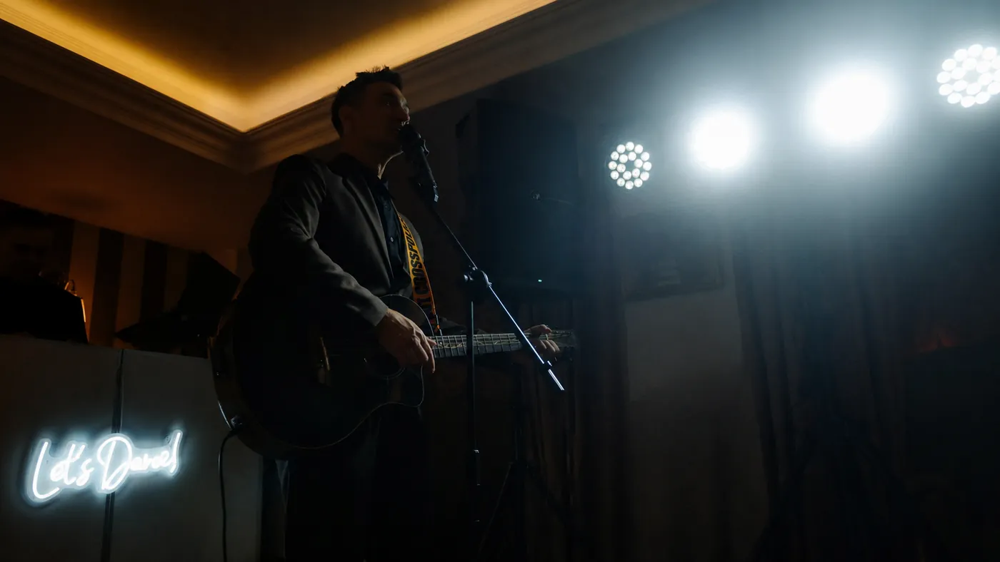

Музыкальный welcome на клавишах
Живой фоновый сет во время сбора гостей. Музыка создаёт настроение, но не мешает людям знакомиться и общаться.
Музыка
Вокал, гитара, клавиши и музыкальная импровизация становятся способом общения с залом и частью общей программы.
Живые фрагменты
От фонового сета во время сбора гостей до вокальных и инструментальных эпизодов внутри вечера.
Живой фоновый сет во время сбора гостей. Музыка создаёт настроение, но не мешает людям знакомиться и общаться.
Живое выступление, общение с залом и реакция гостей внутри одного музыкального эпизода.
Вокальные фрагменты с вариантами музыки для первого танца.

Возможности
Клавиши встречают гостей, гитара поддерживает камерный момент, вокальный блок собирает внимание, а новая песня может родиться прямо из разговора с человеком в зале.
Песни, которые поддерживают конкретный момент вечера.
Камерная энергия и прямой контакт с залом.
Welcome, фоновые мелодии и точные эмоциональные акценты.
Песни и шутки рождаются из общения с гостями.
Живой номер прямо из того, что происходит в зале.
Про молодожёнов, именинника и гостей — с точным личным попаданием.
Знакомые песни с живым сопровождением и вниманием к темпу гостей.
Несколько песен, которые собирают внимание и воздух в одном месте.



Общение становится музыкой
Сначала появляется разговор, голос или реакция человека. Затем из этого материала рождается музыкальная сцена.
Сначала разговор с человеком из зала, затем — музыкальная импровизация прямо из его истории.
Гость записывает короткий звук, а затем этот голос становится основой для новой мелодии.
Папа выпускника вышел попробовать автотюн, и через несколько секунд это превратилось в импровизационный баттл.
Живой фрагмент, снятый гостем на телефон.
Прямой контакт
Напишите дату, формат события и задачу. Я подскажу, как музыка может работать внутри программы.